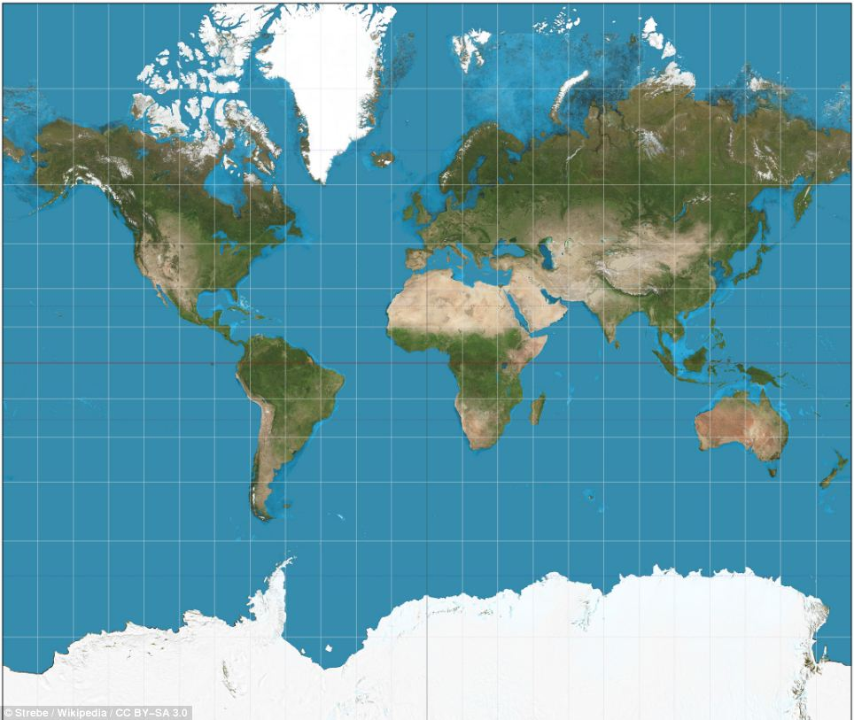

What is an Image Map?
An image map allows you to define multiple clickable areas on a single image. Each area can be a rectangle, circle, or polygon, and can link to different URLs based on where the user clicks.
How Does It Work?
Image maps are created using two main tags:
: Defines the map and links it to an image via itsnameattribute.: Defines individual clickable regions within the map, specifying shape, coordinates, and destination URL.
How to Use Image Maps
- Use the
usemapattribute pointing to your map name (e.g.,usemap="#india_map"). - Create a
element with the samenameas referenced in the image. - Add one or more
elements inside the map to define clickable zones.
India Map with Clickable Region
In this example, clicking on the highlighted region of India will open a link to a related page.
💡 Tip: You can test this by replacing india-map.jpg with any image and updating the href links to real pages.
📋 Supported Shapes for Clickable Areas
| Shape | Attribute Value | Coordinates Format | Example |
|---|---|---|---|
| Rectangle | rect |
x1,y1,x2,y2 |
|
| Circle | circle |
x,y,r |
|
| Polygon | poly |
x1,y1,x2,y2,...,xn,yn |
|
💡 Tips for Working with Image Maps
- Always include an
altattribute for accessibility and fallback text. - Use online tools like Image Map Generator to find exact coordinates.
- The
usemapattribute must start with a#symbol and match thenameof the map exactly. - Avoid overlapping areas unless intentional — only the first defined area will respond.